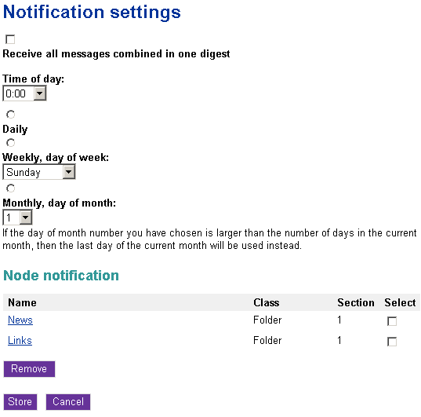

Using an actual site
Subtree notifications are available for those users who are allowed to use the "notification" module by the role/policy settings. Please refer to "Granting access to notifications" for more information about access rights. Collaboration notifications are only available when you're using the administration interface.
Subscribing for subtree notifications
A user can subscribe for subtree notifications about the item that is being viewed by clicking the "Keep me updated" button. The following screenshot shows a forum from one of the standard sites.
The "keep me updated" button.
After clicking this button, the system will add a new subtree notification and show a confirmation:
The "notification added" confirmation for users.
In the standard sites, the "Keep me updated" button is always displayed on the forum pages while other pages do not contain this button. The forum is controlled by the following templates:
- design/your_siteaccess/override/templates/full/forum.tpl
- design/your_siteaccess/override/templates/full/forum_topic.tpl
Please refer to "Adding the "Keep me updated" button" for more information about adding the update button to other templates/pages.
Setting the digest mode
The notification settings can be accessed regardless of the siteaccess/design that is used (as long as the permissions are ok). You can do the following to access the interface:
- After logging in to the system, add the "/notification/settings" notation to the site URL (http://www.example.com/notification/settings) in order to access the notification settings. You should see the digest settings and the "Node notification" list (as shown in the following screenshot).
Notification settings for users.
- By default, the digest mode is disabled. To enable the digest mode, select the "Receive all messages combined in one digest" check-box, and choose how often the digest should be sent to you.
- Once a day, at some fixed time (from 0:00 to 23:00).
- Once a week, on some fixed day (from Sunday to Saturday).
- Once a month, on some fixed day (from 1 to 31).
- Click the "Store" button to save your settings. (If you wish to discard changes, simply click the "Cancel" button.)
Unsubscribing
If you no longer wish to receive subtree notifications about an object, follow these instructions to unsubscribe:
- Access your notification settings by adding the "/notification/settings" notation to the site URL (http://www.example.com/notification/settings).
- The "Node notification" list located under the digest settings contains all the items that you have already subscribed for (look at the previous screenshot). Use check-boxes to select the item(s) that you no longer wish to be notified about.
- Click the "Remove" button. The system will remove the selected item(s) from the list of notifications.
Please note that you can customize the notification settings template(s) by copying the default templates from either the standard or the admin design and changing them to suit your site.
Svitlana Shatokhina (14/09/2010 11:49 am)
Geir Arne Waaler (29/09/2010 6:40 am)
Comments
There are no comments.